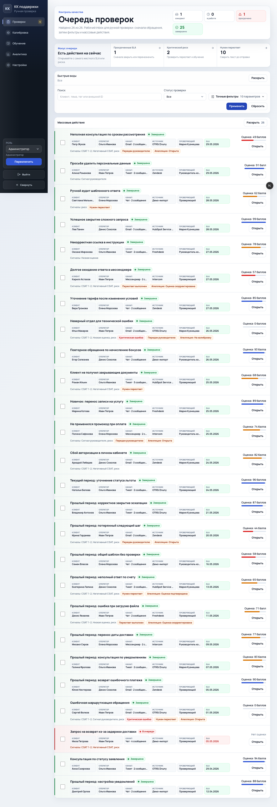
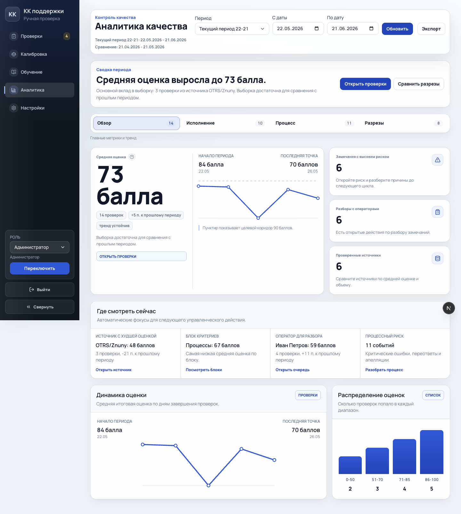
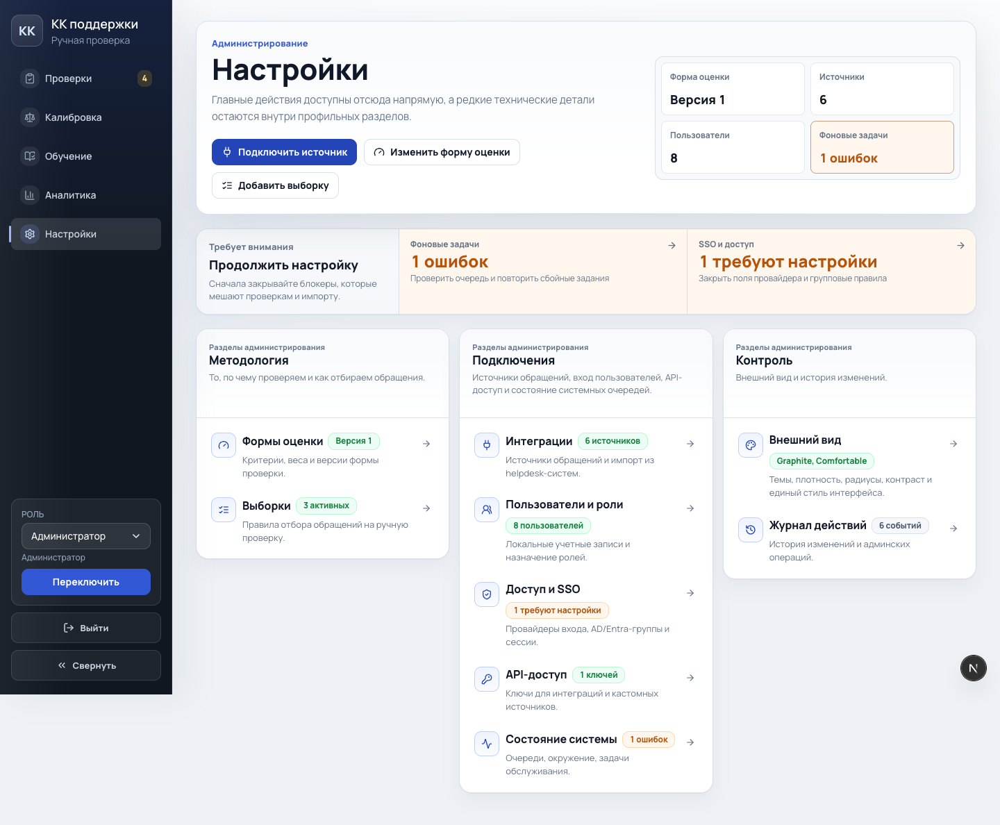
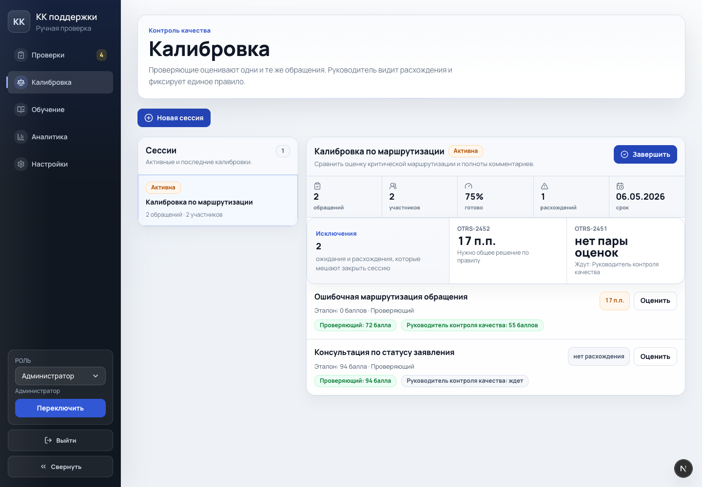
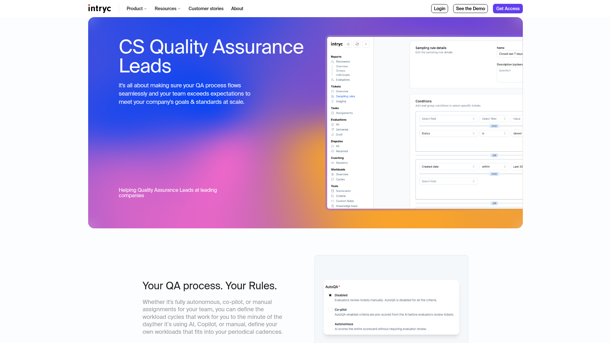
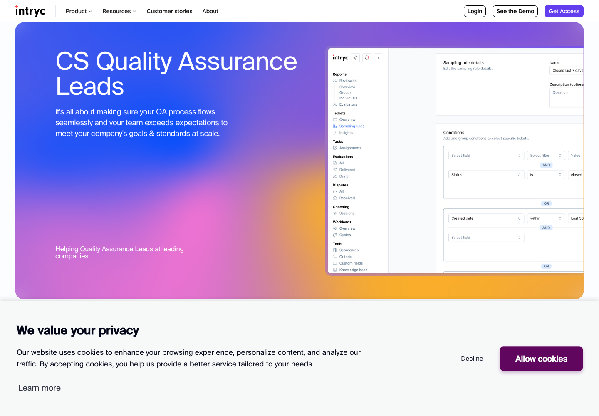
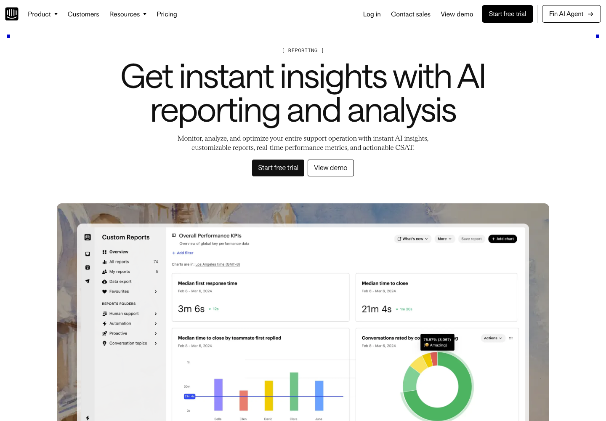
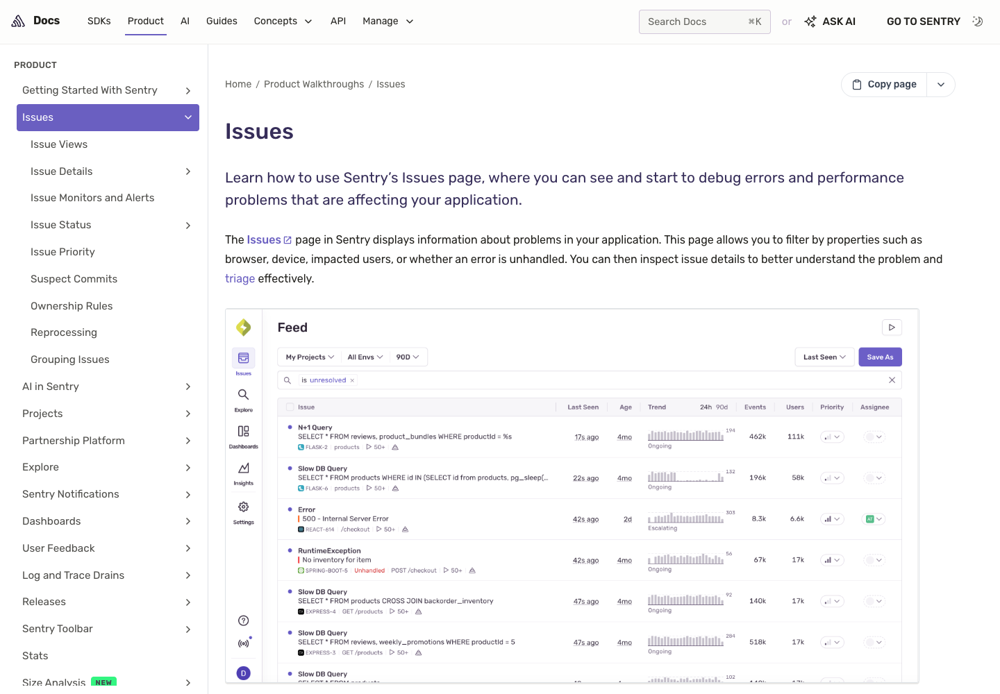

Design improvement report
QC interface declutter without losing operational signal
Reading this as an enterprise QA operations console for QA leads, admins, analysts and agents. The visual language should stay restrained and dense, but every fact must have one clear owner so the same information is not repeated as a KPI, hint, chip, row fact and callout.
Current screenshots
Where overload currently appears
Screens were captured from the local demo interface on May 26, 2026. The current visual system is coherent, but the information architecture now needs stricter ownership rules.




Audit synthesis
What to reduce first
Three read-only audits converged on the same pattern: the interface needs fewer formats for the same fact, not fewer operational facts.
Duplicate fact layers
Header metrics, focus cards, section subtitles and row chips often restate the same queue, risk or readiness facts.
Clickable cards that do not change context
Some focus cards look like filters but link back to the same unfiltered route. They should either filter the list or become static status.
Too many severity encodings
Rows can use tint, stripe, chip, SLA tile and signal badges together. Keep one dominant severity marker and reserve badges for exceptions.
Panel grammar drift
Admin, reports, integrations and workflow pages use similar panels with different header shapes, action slots and helper copy rules.
References
Patterns worth adapting
These are not templates to copy. The useful pattern is how they assign navigation, status, filters and analytics to separate layers.






Core contract
One owner per fact
This should become the product rule for every page. It keeps density high while removing repeated evidence.
1. PageCommand owns scope and primary actions only
The page header says where the user is, what scope they are viewing, and what primary command is available. It should not carry KPI counts already shown below.
- Keep: title, role/scope, primary actions.
- Remove: current totals, readiness claims, long workflow explanations.
PageCommand title: "Очередь проверок" scope: "Период: май, все источники" actions: [Обновить] [Экспортировать] No counts here if PageKpiGrid already owns them.
2. PageKpiGrid owns aggregate truth
Counts, averages, deltas, period totals and readiness totals live in one KPI grid. A helper can define denominator or caveat, but cannot paraphrase the label.
- Max 3-5 KPI cards per page.
- One primary metric if there is a clear leading question.
- Never repeat a KPI value in a focus strip.
PageKpiGrid Average score: 91.4 Critical risk: 3 Overdue: 7 Unassigned: 4 FocusStrip may say "Разобрать просроченные", not "7 просрочено" again.
3. ActionFocusStrip owns next action, not status
The focus strip should answer "where should I click now?" It should contain filtered links or remediation actions. If a card does not change state, it should not look actionable.
- Action card: links to filtered queue or setup page.
- Static note: notice styling, not a clickable card.
- Max 3 items; more belongs in the list itself.
ActionFocusStrip [Просроченные проверки -> /reviews?due=overdue] [Критический риск -> /reviews?risk=critical] [Без QA -> /reviews?assignee=none]
4. EntityList owns selection, not all metadata
A row should help the user decide whether to open it. Detailed facts move to EntityDetail or an expanded row. This matters most in reviews, coaching, calibration, integrations and users.
- Three scan anchors per row: identity, status/severity, score/action.
- One dominant severity marker.
- Metadata like source, reviewer, SLA and timestamps belongs in a fact grid.
Row Subject + customer State: Просрочено Score/risk + Open Expanded facts SLA, source, channel, operator, reviewer, timestamps
5. Notice owns remediation and empty states
`soft-callout` is currently used for facts, metrics and guidance. Split it conceptually into FactItem and Notice.
- FactItem: label/value metadata.
- Notice: warning, empty state, setup required, small sample caveat.
- HelpTooltip: formula or caveat only, not duplicated visible text.
FactItem Source: Zendesk Last run: 26.05 10:12 Notice "Недостаточно данных для устойчивого тренда."
Section map
Concrete changes by section
This is the practical cleanup plan. It keeps all critical information, but assigns it to fewer, more predictable surfaces.
| Section | Keep Visible | Move Or Collapse | Reason |
|---|---|---|---|
| Reviews | Queue scope, 3-4 aggregate metrics, real filtered focus actions, lean row list. | Move client/operator/channel/source/reviewer/SLA facts into expanded detail or muted context line. | Reviewers choose rows faster when each row has three anchors instead of many competing chips. |
| Review detail | Conversation, score form, latest review state, history disclosure. | Reduce repeated summary text between disclosure header, body and form default value. | The page should focus on evaluation and evidence, not duplicate the same review narrative. |
| Reports | One executive insight, primary score, KPI grid, charts as evidence. | Merge FocusPanel guidance with InsightSummary; remove duplicate metric explanation from chart helpers. | Analytics should answer "what changed and where to inspect" once, then show evidence. |
| Coaching | Training queue, highest-priority assignment, due state, score/risk context. | Pin first task inside the list instead of separate panel plus repeated list item. | One task model is easier to scan and avoids "главное плюс остальные" duplication. |
| Self-review | Action-needed list and history list. | Make focus cards either filter action-needed items or become static counters. | Agents need a clean split between "answer now" and "read later". |
| Calibration | Session status, exception band, item rows with subject, spread, missing count, action. | Hide per-participant score pills until row expansion or selected detail. | The default view should surface disagreement, not every reviewer fact. |
| Admin home | Primary admin actions, one attention strip, stable section navigation. | Separate navigation cards from status/action cards; create one admin KPI registry. | Admin should read as a control console, not a set of cards that all try to be summaries. |
| Users and roles | User directory, role state, active sessions, create user action. | Move role-permission matrix into role detail or disclosure; avoid repeating team/access copy in subtitles. | Admins usually need to find and adjust a user first; permission education is secondary. |
| Scorecards | Active method, version action, criteria list when needed. | Collapse historical criteria details by default; keep weight/status visible only where comparing versions. | Method setup needs confidence in the active version, not all historical details at once. |
| Integrations | Source readiness, last diagnostic/run, required next setup action. | Put auth modes, certification gates, operation labels and raw payloads into detail/debug zones. | Integration pages mix operational readiness with implementation detail; separate them by audience. |
| System, audit, sampling, appearance | Current health, required action, recent activity or selected setting. | Move technical diagnostics and explanatory paragraphs behind disclosures; standardize empty/help taxonomy. | Admin utility pages should use the same control grammar as the rest of the console. |
Implementation plan
Safe order of work
This can be implemented without changing business logic or API contracts first. The first pass is mostly layout, copy ownership and component semantics.
Define semantic component roles
Add or standardize `PageCommand`, `PageKpiGrid`, `ActionFocusStrip`, `PanelHeader`, `FactItem`, `Notice`, and a shared action vocabulary. Existing CSS can be mapped onto these roles.
Remove duplicated page-level summaries
Start with Reports, Reviews, Coaching, Self-review and Admin. For each page, decide whether a fact lives in KPI, focus action, row, detail or notice. Delete the other appearances.
Compress rows and move metadata into detail
Reviews, calibration, users, integrations and system jobs should default to lean rows. Use expanded rows or side/detail panels for rich fact grids.
Normalize status and empty-state taxonomy
Use consistent buckets: no data yet, sample too small, setup required, warning, error, completed. This removes repeated explanatory paragraphs while preserving guidance.
Verify with viewport screenshots and task flows
Check desktop and mobile screenshots for Reviews, Reports, Admin, Coaching, Self-review, Calibration and Integrations. Then run typecheck and relevant e2e flows.
Decision checklist
How to know the cleanup worked
One page, one summary layer
No page shows the same count in header, KPI, focus strip and section copy.
Rows have three anchors
Identity, status/severity and action/score are visible. Extra facts are available but not competing.
All action cards change state
If it looks clickable, it applies a filter, opens a detail, starts an action or navigates to setup.
One severity marker per record
Row tint, stripe, pill and icon are not stacked unless the row has a truly exceptional state.
Panel headers are predictable
Title, optional subtitle, optional status/action slot. Selected entity facts live in the body.
Help text explains, not repeats
Tooltips and subtitles provide formulas, caveats or remediation, not paraphrases of labels.